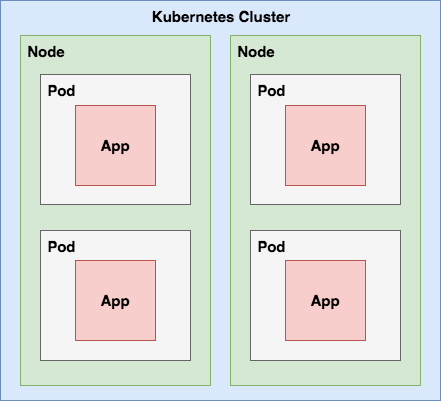
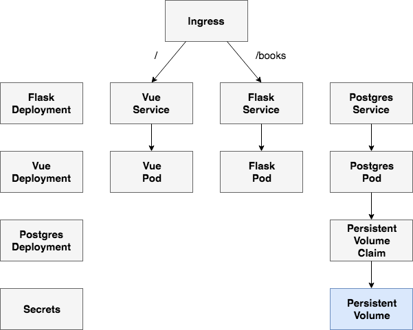
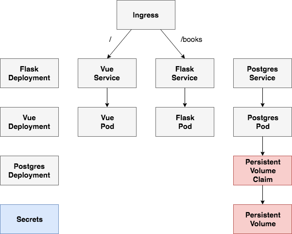
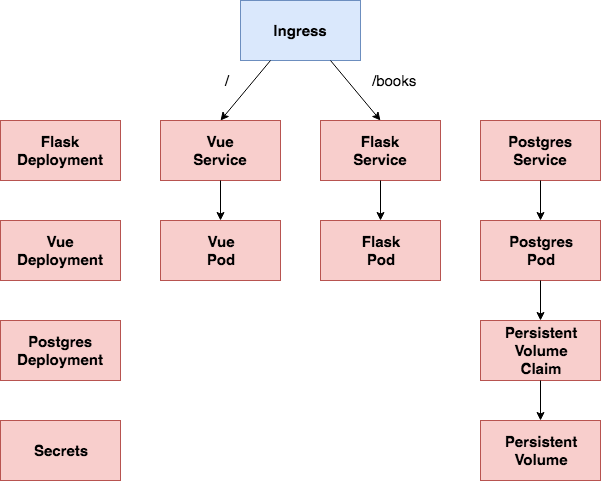
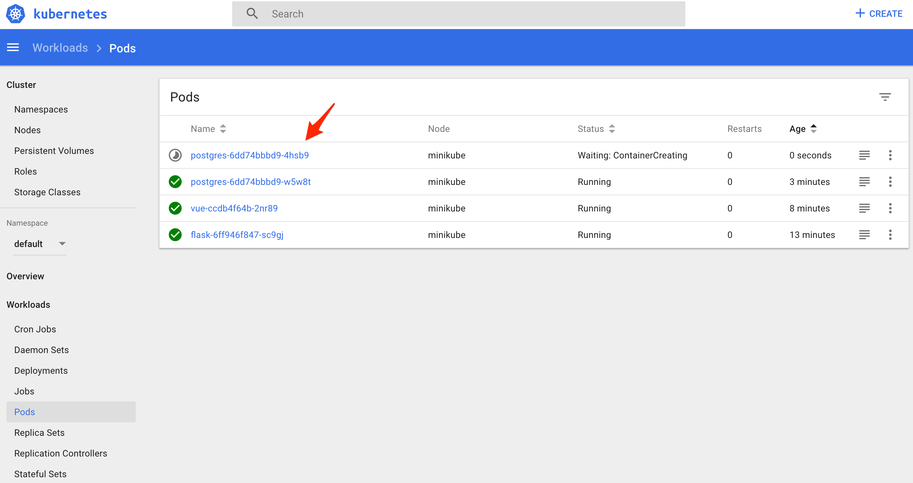

class: center, middle # Kubernetes for Application Developers <img src="images/kubernetes-logo.png" alt="kubernetes logo" style="width:20%;"> <br> <div> <span style="vertical-align:60%;">Presented by <em>Michael Herman</em> at <a href="https://www.meetup.com/Node-js-Denver-Boulder">Denver Node</a></span> <img src="images/javascript.png" alt="javascript logo" style="width:5%;"> </div> --- ### Agenda -- ##### (1) Intro 1. About Me 1. Objectives -- ##### (2) Theory 1. Container Orchestration 1. Why Learn Kubernetes? 1. Kubernetes Concepts 1. Creating Kubernetes Objects -- ##### (3) Practice 1. App Overview 1. Google Cloud Platform (GCP) 1. Volume 1. Secrets 1. Deployments 1. Services -- ##### (4) Next Steps --- class: center, middle ## Intro --- ### About Michael ``` $ whoami michael.herman ``` <p style="margin:0"><img src="images/me.png" style="max-width: 10%;" alt="me"></p> -- #### Day Job Senior Software Engineer at [ClickFox](https://www.clickfox.com/). <img src="images/clickfox.png" style="max-width: 4%; border:0; box-shadow: none;" alt="clickfox logo"> -- #### Also 1. Co-founder/author of [Real Python](https://realpython.com) 1. 😍 - [tech writing/education](http://mherman.org), [open source](http://github.com/mjhea0), [financial models](http://www.starterfinancialmodel.com/), [radiohead](http://radiohead.com/) <a href="https://testdriven.io"> <img src="images/mobile_image.png" style="max-width: 20%; padding-top:10px; box-shadow: none;" alt="testdriven.io"> </a> --- ### Objectives By the end of this talk, you should be able to... -- 1. Explain what **container orchestration** is and why you may need to use an orchestration tool -- 1. Discuss the pros and cons of using **Kubernetes** over other orchestration tools -- 1. Explain the following **Kubernetes primitives** - Node, Pod, Service, Label, Deployment, Volume -- 1. Spin up a Node-based microservice locally with **Docker Compose** -- 1. Configure a Kubernetes cluster to run on **Google Cloud Platform (GCP)** -- 1. Set up a **Volume** to hold Postgres data -- 1. Use **Kubernetes Secrets** to manage sensitive information -- 1. Run Node and Postgres on **Kubernetes** -- 1. Expose a Node API to external users via a **Load Balancer** --- class: center, middle ## Theory --- ### What is Container Orchestration? -- As you move from deploying containers on a single machine to deploying them across a number of machines, you'll need an orchestration tool to manage (and automate) the arrangement, coordination, and availability of the containers across the entire system. -- **Issues:** 1. Cross-server container communication 1. Horizontal scaling 1. Service discovery 1. Security/TLS 1. Zero-downtime deploys 1. Rollbacks -- <br> This is where [Kubernetes](https://kubernetes.io/) fits in along with a number of other orchestration tools - like [Docker Swarm](https://docs.docker.com/engine/swarm/), [ECS](https://aws.amazon.com/ecs/), [Mesos](http://mesos.apache.org/), and [Nomad](https://www.nomadproject.io/). --- ### What is Container Orchestration? (continued...) -- **Which orchestration tool should you use?** -- - use *Kubernetes* if you need to manage large, complex clusters - use *Docker Swarm* if you are just getting started and/or need to manage small to medium-sized clusters - use *ECS* if you're already using a number of AWS services -- | Tool | Pros | Cons | |--------------|-----------------------------------------------|------------------------------------| | Kubernetes | large community, flexible, most features, hip | complex setup, high learning curve | | Docker Swarm | easy to set up, perfect for smaller clusters | limited by the Docker API | | ECS | fully-managed service, integrated with AWS | vendor lock-in | -- There's also a number of managed Kubernetes services on the market. Do you want to focus on managing a Kubernetes cluster or on deploying your apps to production? -- <small><em>For more, review [Choosing the Right Containerization and Cluster Management Tool](https://blog.kublr.com/choosing-the-right-containerization-and-cluster-management-tool-fdfcec5700df).</em></small> --- ### Orchestration Feature Wish-list -- <table style="width:100%;"> <thead> <tr> <th>Feature</th> <th>Info</th> </tr> </thead> <tbody> <tr> <td>Health checks</td> <td>Verify when a task is ready to accept traffic</td> </tr> <tr> <td>Dynamic port-mapping</td> <td>Ports are assigned dynamically when a new container is spun up</td> </tr> <tr> <td>Zero-downtime deployments</td> <td>Deployments do not disrupt end users</td> </tr> <tr> <td>Service discovery</td> <td>Automatic detection of new containers and services</td> </tr> <tr> <td>Auto scaling</td> <td>Automatically scale resources up or down based on the load</td> </tr> <tr> <td>Provisioning</td> <td>New containers should select hosts based on resources and configuration</td> </tr> </tbody> </table> -- **What else?** -- Load balancing, logging, monitoring, authentication and authorization, security... *predictability*, *scalability*, and *high availability*... --- ### Why Learn Kubernetes? https://godaddy.github.io/2018/05/02/kubernetes-introduction-for-developers/ increased velocity happier developers smaller teams, smaller projects, less bugs --- ### Kubernetes Concepts -- The primitives: 1. Node 1. Pod 1. Service 1. Label 1. Deployment 1. Volume <small><em>Source: [Kubernetes 101: Pods, Nodes, Containers, and Clusters](https://medium.com/google-cloud/kubernetes-101-pods-nodes-containers-and-clusters-c1509e409e16)</em></small> <br><br> <img src="images/kubernetes-logo-2.png" alt="kubernetes logo" style="width:30%;"> --- ### Kubernetes Concepts (continued...) -- **Nodes** A [Node](https://kubernetes.io/docs/concepts/architecture/nodes/) is a worker machine provisioned to run Kubernetes. Each Node is managed by the Kubernetes master. -- **Pods** A [Pod](https://kubernetes.io/docs/concepts/workloads/pods/pod/) is a logical, tightly-coupled group of application containers that run on a Node. Containers in a Pod are deployed together and share resources (like data volumes and network addresses). Multiple Pods can run on a single Node. -- <p style="margin-top:30px">  </p> --- ### Kubernetes Concepts (continued...) -- **Services** A [Service](https://kubernetes.io/docs/concepts/services-networking/service/) is a logical set of Pods that perform a similar function. It enables load balancing and service discovery. It's an abstraction layer over the Pods; Pods are meant to be ephemeral while services are much more persistent. -- **Deployments** [Deployments](https://kubernetes.io/docs/concepts/workloads/controllers/deployment/) are used to describe the desired state of Kubernetes. They dictate how Pods are created, deployed, and replicated. -- <p style="margin-top:40px"> <img src="images/flask-kubernetes-service-pod.png" alt="kubernetes service and pod" style="width:70%;"> </p> --- ### Kubernetes Concepts (continued...) -- **Label** [Labels](https://kubernetes.io/docs/concepts/overview/working-with-objects/labels/) are key/value pairs that are attached to resources (like Pods) which are used to organize related resources. You can think of them like CSS selectors. For example: 1. *Environment* - `dev`, `test`, `prod` 1. *App version* - `beta`, `1.2.1` 1. *Type* - `client`, `server`, `db` -- **Volumes** [Volumes](https://kubernetes.io/docs/concepts/storage/volumes/) are used to persist data beyond the life of a container. They are especially important for stateful applications like Redis and Postgres. 1. **[PersistentVolume](https://kubernetes.io/docs/concepts/storage/persistent-volumes/)** defines a storage volume independent of the normal Pod-lifecycle. It's managed outside of the particular Pod that it resides in. 1. **[PersistentVolumeClaim](https://kubernetes.io/docs/concepts/storage/persistent-volumes/)** is a request to use the PersistentVolume by a user. --- ### Creating Objects To create a new [object](https://kubernetes.io/docs/concepts/overview/working-with-objects/kubernetes-objects/) in Kubernetes, you must provide a "spec" that describes its desired state. We'll be using YAML files for this. -- **Example** ```yaml apiVersion: extensions/v1beta1 kind: Deployment metadata: name: node spec: replicas: 1 template: metadata: labels: app: node spec: containers: - name: node image: node-kubernetes:v0.0.1 ``` **Required Fields** 1. `apiVersion` - [Kubernetes API](https://kubernetes.io/docs/reference/#api-reference) version 1. `kind` - the type of object you want to create 1. `metadata` - info about the object so that it can be uniquely identified 1. `spec` - desired state of the object --- class: center, middle ## Practice --- ### App Overview -- Node/Express + Postgres Todo CRUD App http://github.com/testdrivenio/node-kubernetes -- <br> **Routes** | URL | HTTP Verb | Action | |-------------|-----------|---------------------| | / | GET | Sanity Check | | /todos | GET | Get all todos | | /todos/:id | GET | Get a single todo | | /todos | POST | Add a todo | | /todos/:id | PUT | Update a todo | | /todos/:id | DELETE | Delete a todo | --- ### Google Cloud Platform -- 1. Configure the [Google Cloud SDK](https://cloud.google.com/sdk). 1. Install [kubectl](https://kubernetes.io/docs/reference/kubectl/overview/), a CLI tool used for running commands against Kubernetes clusters. 1. Create a GCP project. 1. Create the cluster -- [Minikube](https://kubernetes.io/docs/setup/minikube/) is a tool which allows developers to use and run a Kubernetes cluster locally. -- #### Getting Started First, install the following tools: 1. **Install a [Hypervisor](https://kubernetes.io/docs/tasks/tools/install-minikube/#install-a-hypervisor)** (like [VirtualBox](https://www.virtualbox.org/wiki/Downloads) or [HyperKit](https://github.com/moby/hyperkit)) to manage virtual machines 1. **Install and Set Up [kubectl](https://kubernetes.io/docs/tasks/tools/install-kubectl/)** to deploy and manage apps on Kubernetes 1. **Install [Minikube](https://github.com/kubernetes/minikube/releases)** -- Then, start the cluster: ```sh $ minikube start --vm-driver=virtualbox $ minikube dashboard ``` <p style="margin-top:30px"> <img src="images/minikube.jpg" alt="minikube logo" style="width:35%;"> </p> --- ### Volume - PersistentVolume <div style="padding-top:20px;">  </div> --- ### Volume - PersistentVolume -- *kubernetes/persistent-volume.yml*: ```yaml kind: PersistentVolume apiVersion: v1 metadata: name: postgres-pv labels: type: local spec: capacity: storage: 2Gi storageClassName: standard accessModes: - ReadWriteOnce hostPath: path: "/data/postgres-pv" ``` -- Create the volume: ```sh $ kubectl apply -f ./kubernetes/persistent-volume.yml ``` -- View details: ```sh $ kubectl get pv ``` --- ### Volume - PersistentVolumeClaim <div style="padding-top:20px;"> <img src="images/flask-kubernetes-pvc.png" style="max-width:100%; border:0; box-shadow: none;" alt="diagram"> </div> --- ### Volume - PersistentVolumeClaim -- *kubernetes/persistent-volume-claim.yml*: ```yaml kind: PersistentVolumeClaim apiVersion: v1 metadata: name: postgres-pvc labels: type: local spec: accessModes: - ReadWriteOnce resources: requests: storage: 2Gi volumeName: postgres-pv ``` -- Create the volume claim: ```sh $ kubectl apply -f ./kubernetes/persistent-volume-claim.yml ``` -- View details: ```sh $ kubectl get pvc ``` --- ### Secrets <div style="padding-top:20px;">  </div> --- ### Secrets -- [Secrets](https://kubernetes.io/docs/concepts/configuration/secret/) are used to hold sensitive data such as passwords, API tokens, or SSH keys. -- *kubernetes/secret.yml*: ```yaml apiVersion: v1 kind: Secret metadata: name: postgres-credentials type: Opaque data: user: c2FtcGxl password: cGxlYXNlY2hhbmdlbWU= ``` -- The `user` and `password` fields are base64 encoded strings ([security via obscurity](https://en.wikipedia.org/wiki/Security_through_obscurity)): ```sh $ echo -n "<string>" | base64 ``` -- Add the secrets: ```sh $ kubectl apply -f ./kubernetes/secret.yml ``` --- ### Postgres Deployment <div style="padding-top:20px;"> <img src="images/flask-kubernetes-pg-deployment.png" style="max-width:100%; border:0; box-shadow: none;" alt="diagram"> </div> --- ### Postgres Deployment -- *kubernetes/postgres-deployment.yml*: [https://github.com/testdrivenio/flask-vue-kubernetes/blob/master/kubernetes/postgres-deployment.yml](https://github.com/testdrivenio/flask-vue-kubernetes/blob/master/kubernetes/postgres-deployment.yml) -- Create the Deployment: ```sh $ kubectl create -f ./kubernetes/postgres-deployment.yml ``` <br> <img src="images/postgres-logo.png" alt="postgres logo" style="width:20%;"> --- ### Postgres Service <div style="padding-top:20px;"> <img src="images/flask-kubernetes-pg-service.png" style="max-width:100%; border:0; box-shadow: none;" alt="diagram"> </div> --- ### Postgres Service -- *kubernetes/postgres-service.yml*: ```yaml apiVersion: v1 kind: Service metadata: labels: service: postgres name: postgres spec: type: ClusterIP ports: - name: postgres port: 5432 selector: service: postgres ``` -- Create the service: ```sh $ kubectl create -f ./kubernetes/postgres-service.yml ``` -- Create the database: ```sh $ kubectl get pods $ kubectl exec postgres-<POD_IDENTIFIER> \ --stdin --tty -- createdb -U sample books ``` --- ### Flask Deployment <div style="padding-top:20px;"> <img src="images/flask-kubernetes-flask-deployment.png" style="max-width:100%; border:0; box-shadow: none;" alt="diagram"> </div> --- ### Flask Deployment -- *kubernetes/flask-deployment.yml*: [https://github.com/testdrivenio/flask-vue-kubernetes/blob/master/kubernetes/flask-deployment.yml](https://github.com/testdrivenio/flask-vue-kubernetes/blob/master/kubernetes/flask-deployment.yml) -- Build and push the image to [Docker Hub](https://hub.docker.com/): ```sh $ docker build -t mjhea0/flask-kubernetes ./services/server $ docker push mjhea0/flask-kubernetes ``` -- Create the Deployment: ```sh $ kubectl create -f ./kubernetes/flask-deployment.yml ``` <br> <img src="images/flask-logo.png" alt="flask logo" style="width:30%;"> --- ### Flask Service <div style="padding-top:20px;"> <img src="images/flask-kubernetes-flask-service.png" style="max-width:100%; border:0; box-shadow: none;" alt="diagram"> </div> --- ### Flask Service -- *kubernetes/flask-service.yml*: ```yaml apiVersion: v1 kind: Service metadata: labels: service: flask name: flask spec: ports: - name: "5000" port: 5000 targetPort: 5000 selector: service: flask ``` -- Create (and [expose](https://kubernetes.io/docs/tutorials/stateless-application/expose-external-ip-address/)) the service: ```sh $ kubectl expose deployment flask --type=NodePort --port 5000 ``` -- Try it out: ```sh $ open $(minikube service flask --url)/books/ping $ open $(minikube service flask --url)/books ``` --- ### Vue Deployment <div style="padding-top:20px;"> <img src="images/flask-kubernetes-vue-deployment.png" style="max-width:100%; border:0; box-shadow: none;" alt="diagram"> </div> --- ### Vue Deployment -- *kubernetes/vue-deployment.yml*: ```yaml apiVersion: extensions/v1beta1 kind: Deployment metadata: name: vue spec: replicas: 1 template: metadata: labels: run: vue spec: containers: - name: vue image: mjhea0/vue-kubernetes:latest ports: - containerPort: 8080 protocol: TCP restartPolicy: Always ``` --- ### Vue Deployment (continued...) -- Build and push the image to Docker Hub: ```sh $ docker build -t mjhea0/vue-kubernetes ./services/client \ -f ./services/client/Dockerfile-minikube $ docker push mjhea0/vue-kubernetes ``` -- Create the Deployment: ```sh $ kubectl create -f ./kubernetes/vue-deployment.yml ``` <br> <img src="images/vue-logo.png" alt="vue logo" style="width:20%;"> --- ### Vue Service <div style="padding-top:20px;"> <img src="images/flask-kubernetes-vue-service.png" style="max-width:100%; border:0; box-shadow: none;" alt="diagram"> </div> --- ### Vue Service -- *kubernetes/vue-service.yml*: ```yaml apiVersion: v1 kind: Service metadata: labels: service: vue name: vue spec: ports: - name: "8080" port: 8080 targetPort: 8080 selector: service: vue ``` -- Create (and [expose](https://kubernetes.io/docs/tutorials/stateless-application/expose-external-ip-address/)) the service: ```sh $ kubectl expose deployment vue --type=NodePort --port 8080 ``` -- Try it out: ```sh $ open $(minikube service vue --url) ``` --- ### Ingress <div style="padding-top:20px;">  </div> --- ### Ingress -- *kubernetes/minikube-ingress.yml*: [https://github.com/testdrivenio/flask-vue-kubernetes/blob/master/kubernetes/minikube-ingress.yml](https://github.com/testdrivenio/flask-vue-kubernetes/blob/master/kubernetes/minikube-ingress.yml) -- Enable the Ingress [addon](https://github.com/kubernetes/minikube/tree/master/deploy/addons/ingress): ```sh $ minikube addons enable ingress ``` -- Before applying the spec, let's remove the existing Flask and Vue deployments since we used a [NodePort](https://kubernetes.io/docs/concepts/services-networking/service/#publishing-services-service-types) to expose the service to external users: ```sh $ kubectl delete deployment flask $ kubectl delete deployment vue ``` -- Create new deployments: ```sh $ kubectl create -f ./kubernetes/flask-deployment.yml $ kubectl create -f ./kubernetes/vue-deployment.yml ``` --- ### Ingress (continued...) -- Create the Ingress object: ```sh $ minikube addons enable ingress $ kubectl apply -f ./kubernetes/minikube-ingress.yml ``` -- Add entry to */etc/hosts* file: `<MINIKUBE_IP> hello.world` -- Try it out: 1. http://hello.world 1. http://hello.world/#/ping 1. http://hello.world/books 1. http://hello.world/books/ping --- ### Sanity Check the Volume -- How can we tell that the volume is *actually* working? -- 1. Make a change to the book data 1. Delete the Postgres Pod (take note how a new Pod immediately spins up) 1. Wait a few moments for the new Pod to spin up and the old Pod to spin down 1. The book data should have the same state <p style="margin-top:30px">  </p> --- ### Helpful Commands -- | Command | Explanation | |-----------------------------|------------------------------------------------------| | `minikube get-k8s-versions` | Lists the supported Kubernetes versions | | `minikube start` | Starts a local kubernetes cluster | | `minikube ip` | Displays the IP address of the cluster | | `minikube dashboard` | Opens the kubernetes dashboard in your browser | | `kubectl version` | Displays the kubectl version | | `kubectl cluster-info` | Displays the cluster info | | `kubectl get nodes` | Lists the Nodes | | `kubectl get pods` | Lists the Pods | | `kubectl get deployments` | Lists the Deployments | | `kubectl get services` | Lists the Deployments | | `minikube stop` | Stops a local kubernetes cluster | | `minikube delete` | Removes a local kubernetes cluster | More commands: [Minikube Cheat Sheet](https://medium.com/@wisegain/minikube-cheat-sheet-a273385e66c9), [Kubernetes CheatSheet](https://github.com/dennyzhang/cheatsheet-kubernetes-A4) --- ### That's it! What's next? -- ##### Check your understanding 1. [Encrypt the secret data](https://kubernetes.io/docs/tasks/administer-cluster/encrypt-data/) 1. [Access application logs from the Minikube dashboard](https://kubernetes.io/docs/tasks/access-application-cluster/web-ui-dashboard/#logs-viewer) 1. [Dive deeper into health checks with liveness and readiness probes](https://kubernetes.io/docs/tasks/configure-pod-container/configure-liveness-readiness-probes/) 1. [Create an external load balancer](https://kubernetes.io/docs/tasks/access-application-cluster/create-external-load-balancer/) -- ##### Resources 1. Slides - https://mherman.org/presentations/flask-kubernetes 1. Repo - https://github.com/testdrivenio/flask-vue-kubernetes 1. Learn Kubernetes Basics - https://kubernetes.io/docs/tutorials/kubernetes-basics/ 1. Running Flask on Docker Swarm - https://testdriven.io/running-flask-on-docker-swarm (Kubernetes vs. Docker Swarm) -- ##### Questions? ✌️